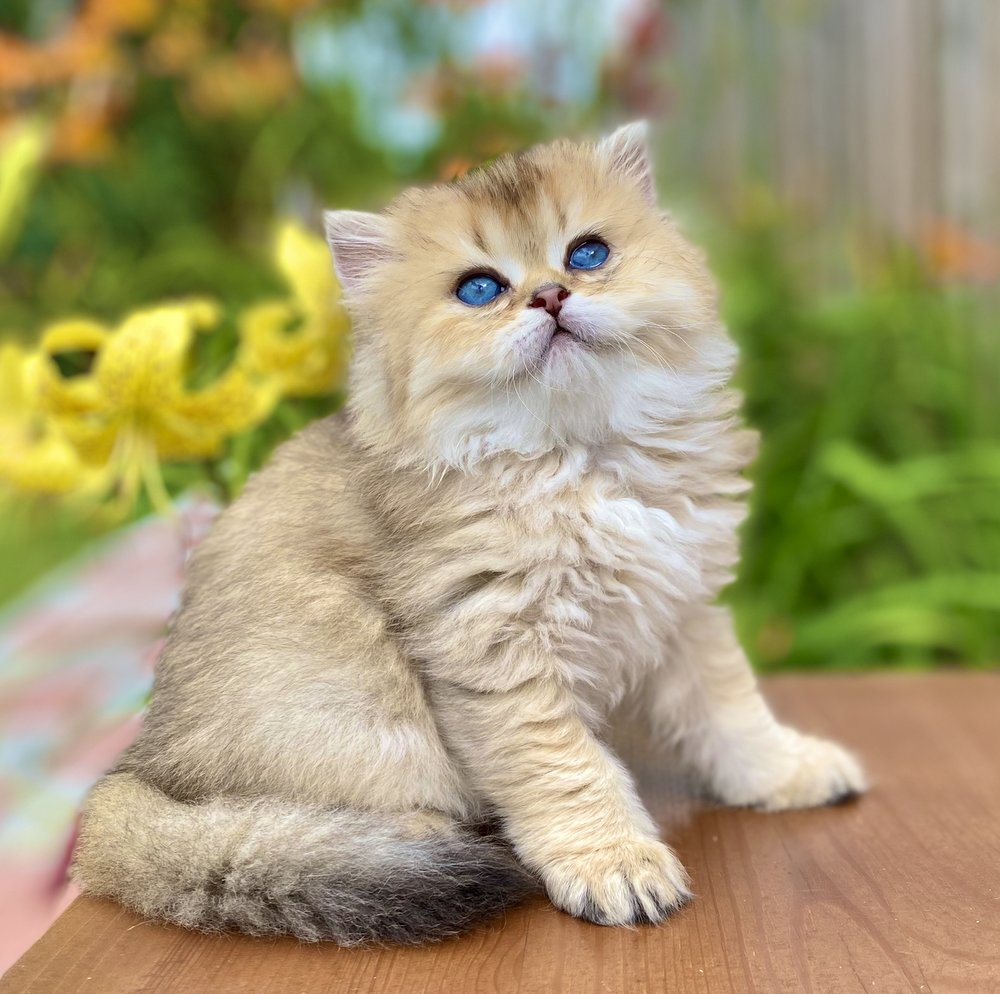

Персидская шиншилла
На главную страницу Слово «шиншилла» связано с окрасом, свойственным двум популярным породам — британской и персидской. Тем не менее, широкая распространенность словосочетания уже практически вывела этих прекрасных серебристых или золотистых красавиц на отдельный пьедестал.
Персидская шиншилла — это великолепная кошка с длинной белой шерстью.
ХАРАКТЕР ПОРОДЫ КОШКИ ШИНШИЛЛА Изначально представителями породы признавали лишь тех кошек, которые имеют один из четырех типов окраса: черный пойнт, шоколадный пойнт, лиловый пойнт и голубой пойнт. «Пойнт» в переводе с английского — точка, пятно. Это слово используют, когда окрашены отдельные участки тела.
Со временем гамму допустимых цветов расширили, сейчас их больше полусотни, в том числе черепаховые и табби.
УХОД И СОДЕРЖАНИЕ Уход за такой кошкой несложен, но есть некоторые нюансы:
ПОДТИП ПОРОДЫ – ПЕРСИДСКИЕ И БРИТАНСКИЕ ШИНШИЛЛЫ ПОДТИП ПОРОДЫ – ПЕРСИДСКИЕ И БРИТАНСКИЕ ШИНШИЛЛЫ
В настоящее время питомников, специализирующихся на этой породе кошек, не так много, но спрос на них высок. Если вы выберете кошку этой породы, она станет любимым и ценным членом вашей семьи.